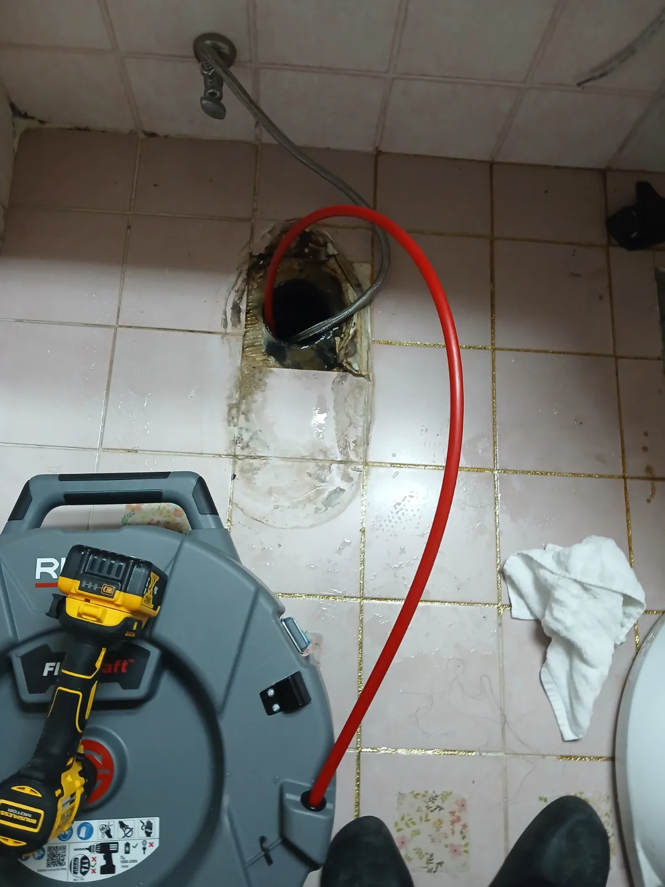

시흥시 하상동 변기막힘, 꿀렁거림 원인은 오수관! 탈거 후 샤프트 해결
시흥시 하상동 아파트에서 약 일주일 전부터 변기를 사용하지 않아도 물이 꿀렁거리는 증상이 반복돼 오수관 문제를 예상했고, 변기 탈거 후 정체된 오수와 검고 찐득한 오염물을 확인해 RIDGID FlexShaft와 Milwaukee AirSnake를 이용해 당일 해결했습니다.
경기 · 시흥시 · 변기막힘
시흥시에서 실제로 해결한 변기막힘 사례를 바탕으로 변기뚫는업체를 찾을 때 확인할 증상과 작업 방법을 정리했습니다. 물이 천천히 내려가거나 수위가 차오르는 막힘, 물이 안 내려가는 증상, 이물질 막힘, 반복 막힘, 변기 역류 등은 원인이 서로 다를 수 있어 현장 진단 후 필요한 범위를 안내합니다.
물이 천천히 내려가거나 수위가 차오르는 막힘, 물이 안 내려가는 증상, 이물질 막힘, 반복 막힘, 변기 역류처럼 비슷해 보이는 증상도 원인 구간은 다를 수 있습니다. 신라건축설비는 실제 출동 기록을 기준으로 증상·원인·사용 장비·작업 결과를 공개합니다.
주요 점검·작업: 석션·에어건·내시경 점검·변기 탈거와 오수관 확인
변기막힘·변기뚫는업체 전체 서비스와 지역별 사례 보기 →
시흥시 하상동 아파트에서 약 일주일 전부터 변기를 사용하지 않아도 물이 꿀렁거리는 증상이 반복돼 오수관 문제를 예상했고, 변기 탈거 후 정체된 오수와 검고 찐득한 오염물을 확인해 RIDGID FlexShaft와 Milwaukee AirSnake를 이용해 당일 해결했습니다.

시흥시 하중동 변기막힘 현장에 신속하게 출동해 변기를 탈거하고 하부 오수관을 확인한 뒤 전문 장비를 투입해 내부에 쌓인 다량의 오염물과 이물질을 제거하고 배수 상태를 정상화했습니다.